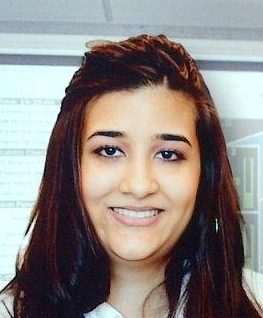
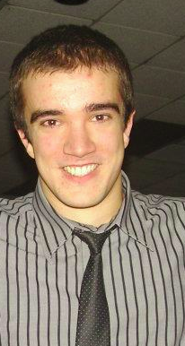

Members
Ali AkhtarHealth PhysicsMAsc: Database of resuspension factors with respect to varying surface roughness characteristics for CANDU reactor containment in the event of a LOCA Research Interests: Radiation
science, radiation
protection,
environmental modelling |
Nicholas ChornoboyNuclear
Security
|
Jordan GilbertHealth PhysicsMAsc:
MCNP Simulation of Offline Core Dose in CANDU Reactors Research Interests: Monte Carlo
simulation, radiation interaction with materials,
shielding |
 |
Hannah GrahamHealth PhysicsMASc: Modelling a Fastscan WBC
in MCNP for the Purpose of Calibration. Research Interests: MCNP
modelling, radiation science.
|
|  |
Eric HeritageHealth
Physics, MASc
|
 |
Martin MagillComputational
Modelling, MSc
|
 |
Margarita TzivakiHealth PhysicsPhD: Dose Assessment and Radiation Effects on Non-Human BiotaResearch Interests: Radiation biology, radiation protection, dosimetry, electron paramagnetic resonance spectroscopy, environmental modelling contact: margarita.tzivaki@uoit.ca
|
Part-Time